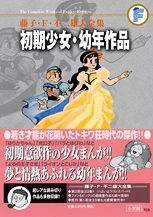

| |

定価1,470円（税込）
A5判／408ページ
好評発売中！
「おやゆびひめ」を除く
全てのタイトルが
初めて単行本に収録
される作品です。
※収録内容は変更になる
場合があります。

|
＜少女向け作品＞
ゆりかちゃん（第1回）かえらないで！の巻
（少女 1954年12月号）
ゆりかちゃん（第2回）おそるべき子ネコの巻
（少女 1955年１月号）
ゆりかちゃん（第3回）時は金なりの巻
（少女 1955年新年増刊号）
ゆりかちゃん（第4回）ダマちゃん来襲の巻
（少女 1955年2月号）
ゆりかちゃん（第5回）シネマ・スコープさんの巻
（少女 1955年3月号）
ゆりかちゃん（第6回）エイプリールフールの巻
（少女 1955年4月号）
ゆりかちゃん（第7回）魔法使いの巻
（少女 1955年5月号）
ゆりかちゃん（第8回）カメラマンの巻
（少女 1955年6月号）
ゆりかちゃん（第9回）お留守番の巻
（少女 1955年9月号）
ゆりかちゃん（第10回）てんらん会の巻
（少女 1955年10月号）
光公子（第1回）（少女 1956年6月号）
光公子（第2回）（少女 1956年7月号）
光公子（第3回）（少女 1956年8月号）
光公子（第4回）（少女 1956年9月号）
光公子（最終回）（少女 1956年10月号）
光公子（読切版）（少女 1956年5月号別冊付録）
エミーと魔法のビン（少女 1955年2月号）
うっかりぼうや（少女 1955年2月号）
母の呼ぶ歌（少女 1955年11月号）
黄金のすずらん（少女 1955年12月号）
泣きだした王さま（少女 1956年1月号）
どろぼうと天使（少女 1956年12月号）
えり子のしあわせ（少女 1957年新年増刊号）
雲の中のミカド（少女 1957年3月号別冊付録）
バラとゆびわ
（少女クラブ 1955年新年増刊号別冊付録）
やっぱり女がいいわ（なかよし 1955年1月号）
春子の日記（なかよし 1960年夏季増刊号） |
|
＜幼年向け作品＞よるの王子さま（第1回）（二年ブック 1955年4月号）
よるの王子さま（第2回）（二年ブック 1955年5月号）
よるの王子さま（第3回）（二年ブック 1955年6月号）
あきれたあきおくん（第1回）宝さがし
（たのしい三年生 1957年1月号）
あきれたあきおくん（第2回）雪あそび
（たのしい三年生 1957年2月号）
あきれたあきおくん（第3回）おつかい
（たのしい三年生 1957年3月号）
コンちゃんのリンゴ（二年ブック 1955年4月号）
ゆきおとこ（二年ブック 1955年6月号）
まほうのリンゴ（二年ブック 1955年4月号）
ロボットくんはりきる！（三年ブック 1955年5月号）
おやゆびひめ（ 幼年クラブ 1955年5月号別冊付録）
ちびとおに（幼年クラブ 1956年2月号）
うっかりにいさん（幼年クラブ 1956年夏季増刊号）
ゆうれいやしき（幼年クラブ 1957年9月号）
おさるのちえくらべ（講談社の漫画絵本16
「こぶたのロビン」 1955年6月5日発行）
いつまでたってもおわらないまんが
（講談社の漫画絵本17「ももたろうさん」
1955年6月5日発行）
べんりなリュックサック（講談社の漫画絵本27
「じゃっくのトッピイ」1955年11月5日発行）
おやまのきょうだい（講談社の漫画絵本35
「いっすんぼうし」1956年1月30日発行）
ライオンとこじか（講談社の漫画絵本38
「ぼうけんきょうだい」 1956年2月29日発行）
ぽちのおつかい
（たのしい一年生 1956年11月号別冊付録）
あきおくんとロボット（たのしい一年生 1958年1月号）
らいおんになったろば（たのしい一年生 1958年10月号）
はるおくんのしっぱい（たのしい二年生 1957年8月号） |
|